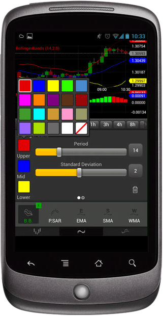
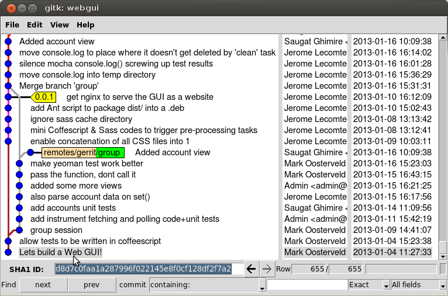

A Tale of Modern Web Development
By Mark Oosterveld & Jerome Lecomte
About us
- Mark Oosterveld
- Jerome Lecomte
About OANDA
Trading interfaces
About the team
- 2 senior fulltime developers
- 2 junior co-op students (every 4 months)
Our goals
- HTML5 & CSS3
- Mobile first, Responsive design
- No backend
- Behaviour-Driven Development
- Code review
- Continuous deployment
Mobile first, responsive design
Get a Device Lab

Better yet, organize it

Device remote debugging
Natively with Safari, Google Chrome
3rd party library Weinre for IE, Firefox, Opera
No backend
REST-like API with CORS enabled
Behaviour-Driven Development
Rule #1

(courtesy of iome.me)
Code Review
Changes must be approved and verified before being merged into master
Continuous deployment
Testsuite run on every new commit
If successful, application packaged
Package deployed internally for stakeholders
January 2nd 2013
4 days to decide on everything
before the co-ops start
Smashing Magazine article "Talks To Help You Become A Better Front-End Engineer in 2013"
Opinionated tools
Their way or the highway
Love them or hate them instantly
It's a quick decision
Yeoman
Rule #1

Grunt
Javascript's response to makefiles
Just another Javascript file
Easy to extend
Lots of modules available
Gruntfile.js template
build task
test task
watch task
Bower
Package management for the web
Like 'apt-get install' for client-side Javascript libraries
Mocha, Chai & Sinon.JS
define('Creating an account model with data from the API', function() {
var account;
before(function() {
// Act
account = new Backbone.Model({
accountName: 'Primary'
});
});
// Assert
it('Translates the accountName property', function() {
account.get('name').should.equal('Primary');
});
});
SASS
Not opinionated

Backbone
Prior experience
Ideal for client-side single-page application
Simple MVC
Coffeescript
It's just Javascript
Only the best parts
Safety of compiled language
Let's get started
Group coding session
Layout core classes of Backbone application
Get familiar with BDD & Coffeescript
Jenkins
Deployment strategy
Figure it out early on to mitigate that risk
If need be, the application can ship today
Gerrit (and later on
Github, Phabricator)
Face-off
Gerrit
(+) Remote git repository, automatically keeps in sync with upstream
(-) Austere UI, 1 review per commit
Github
(+) Very popular , 1 review per branch
(-) Manually keep fork in sync with upstream, lots of merge clouds history
Phabricator
(+) Patch files, 1 review per branch, geeky humor
(-) PHP?
RequireJS
Asynchronuous Module Definition
Too many modules leads to <script> ordering hell
Just express the module dependencies
And let RequireJS figure out the loading order
AMD in action
index.html
main.js
require.config({ paths: { ... } });
require(['views/AccountDetailsView'], function(AccountDetailsView) {
var app = new AccountDetailsView();
});
AccountDetailsView.js
define(['models/AccountModel'], function(AccountModel) {
var AccountDetailsView = function() {
this.account = new AccountModel();
}
return AccountDetailsView;
});
Handlebars
Rule #1: don't mix markup and code
TradeListView.js
$('.trades-list').append(
'
' + trade.id + '
' + trade.get('pair') + '
...
'
);
Better but still fragile
index.html
TradeListView.js
var trade_tmpl = $('#tmpl-trades-item');
trade_tmpl.find('.trade-id').text(trade.id);
trade_tmpl.find('.trade-pair').text(trade.get('pair'));
$('.trades-list').append(trade_tmpl.html());
Handlebars template
index.html
TradeListView.js
var template = Handlebars.compile($('#tmpl-trades-item').html());
var html = template({
id: trade.id,
pair: trade.get('pair')
});
$('.trades-list').append(html);
Template precompilation
trade-item.hbs
{{id}}
{{pair}}
TradeListView.js
var html = Handlebars.template.trades-item({
id: trade.id,
pair: trade.get('pair')
});
$('.trades-list').append(html);
Minimum Viable Product Completed
May 1st 2013
New round of co-ops
UI/UX designer hired
fxKids
Our co-ops had a bit of fun during a company hackday
Living on the bleeding edge
Manually upgrading Yeoman to 1.0.0 beta from 0.9.6
Coffeescript compiler got stricter in 1.6.2
Sourcemaps
- SASS
- Javascript
- Coffeescript